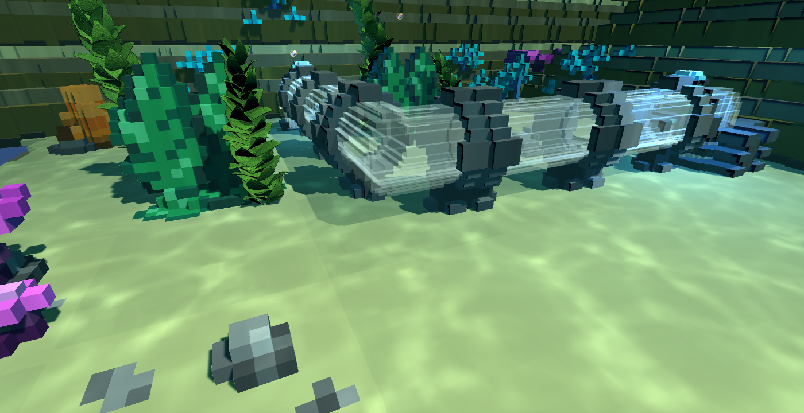

Introduction
Bubbleneer takes place in an underwater wasteland. The apocalypse has rendered the surface inhospitable for humans, and as a result, the surviving pockets of humanity have been forced to migrate deep into the ocean. The underwater cities that humanity has created require huge amounts of energy to power the oxygen systems and other important life support systems.
The underwater cities of humanity are powered by the flow of bubbles that spew out of deep ocean chasms. The bubbleneers of these underwater cities expend city resources to build systems of pipes that direct the bubbles into the city’s power plants which process the bubbles into usable energy.
The player takes on the role of one of these bubbleneers and is tasked with creating systems of pipes to transport the raw bubbles, dealing with the treacherous landscapes of the deep ocean, and fending off sea creatures and other obstacles that are capable of wreaking havoc on these life-support energy grids.